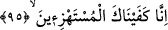

hüküm ve şerîat kabîlinden olan şeyleri açıklamakla emrolunmuştu. Çünkü o, ümmetinin
havâssı dışındakilere bu tür şeyleri açıklamamakla memurdu. Bu tür şeyleri, Allah’ı
bilenler (el-ulemâu billah) günümüze kadar birbirlerinden tevârüs edegelmişlerdir.
Nitekim Molla Câmî şöyle der:
Can dudağa geldi nefes almaya kâdir değilim
Çünkü korkarım ki aşk sırrı âşikâr olur
Bazı havâstan sudûr eden, insanları din husûsunda anlaşmazlık ve tefrîkaya
sürüklemeye sebeb olacak türden şeyleri açıkça söylemekle emrolundukları iddiâsı,
mertebeleri bilmemekten ve melekî-rahmânî olan ile nefsânî-şeytânî olanı birbirinden
ayıramamaktan ileri gelmektedir. Çünkü bu yol, bu tarîkat, bu hedef, elde edilmesi çok
zor şeylerdir. İşin hakîkatine iletecek olan, yalnızca Allah’tır.
Hatırı karışık olanlardan irfan nüktesini taleb etme
Maksud cevherinin kabı, pâk olan gönüllerdir
“Ve ortak koşanlardan yüz çevir!” onların söylediklerine iltifât etme, onları
önemseme ve onlardan intikam alma gâyesi de gütme!
Eğer, “Hz. Peygamber (a.s.) bazı kâfirlere bedduâ etmiş ve bedduâsı kabûl edilmiştir.
Nitekim rivâyete göre Efendimiz, Hakem b. Âs’ın yanından geçerken Hakem kaş-göz
işâretleriyle kendisini küçük düşürmeye kalkıştı. Hz. Peygamber bunu gördü ve:
“Allah’ım! Onu titremeye duçar kıl!” diye bedduâ etti. Hakem, olduğu yerde vücûduna
hâkim olamamaya ve titremeye başladı.[96] Bu durum, Hz. Peygamber’in yumuşak huylu
oluşuna ve hoşuna gitmeyen durumlarla karşılaştığında bunları görmezlikten gelmesine
ters düşmez mi?” diyecek olursan, buna şöyle cevap veririm: Mezkûr durum için
kendisine Allah Teâlâ tarafından izin verilmiş, o da yaptığını yapmıştır. Onun bütün söz
ve davranışları böyledir. Çünkü onun kâmil bir vârisinden bile ancak Allah’ın izin
verdiği şeyler sâdır olur. O halde ilim, amel, ve hâl bakımından yaratılmışların en
kâmili hakkında ne düşünürsünüz?
95. (Seninle) alay edenlere karşı biz sana yeteriz.
Seninle “alay edenlere karşı” onları kahr u perişan ve helâk ederek “biz sana
yeteriz.”
Kâşifî der ki: Doğrusu seninle alay edip duranların şerrini bertaraf etme husûsunda
biz sana yeteriz.